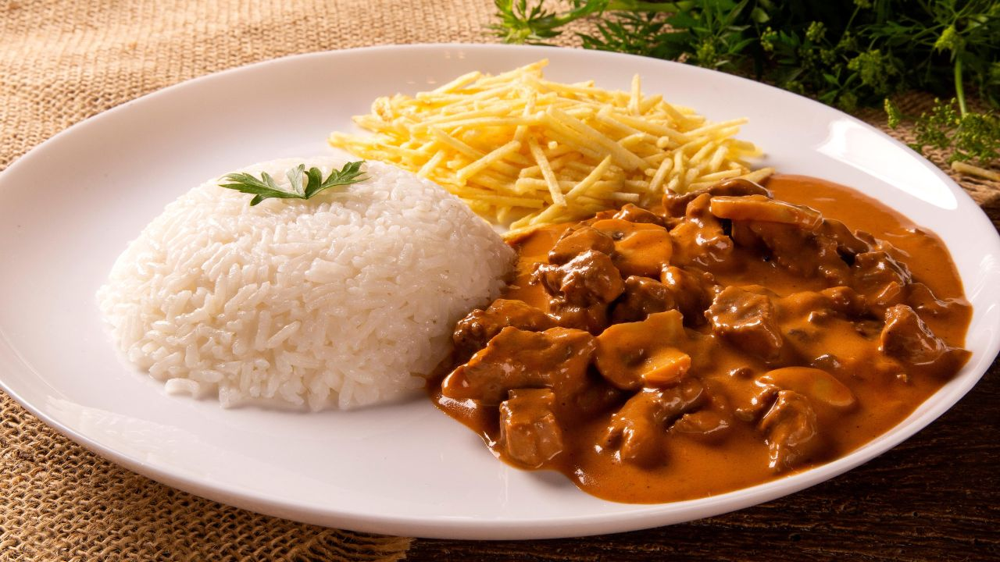

Estrogonofe de carne

INGREDIENTES
500g de carne (patinho ou filé mignon)
1 cebola
2 dentes de alho
200g de molho de tomate
200ml de creme de leite
Sal e pimenta a gosto
Azeite para refogar
Modo de preparo
Corte a carne em tiras e frite em uma panela até dourar.
Adicione a cebola e o alho, refogando até murchar.
Mexa o molho de tomate, o creme de leite e os temperos a gosto.
Cozinhe por alguns minutos e sirva com arroz.
Volte ao menu